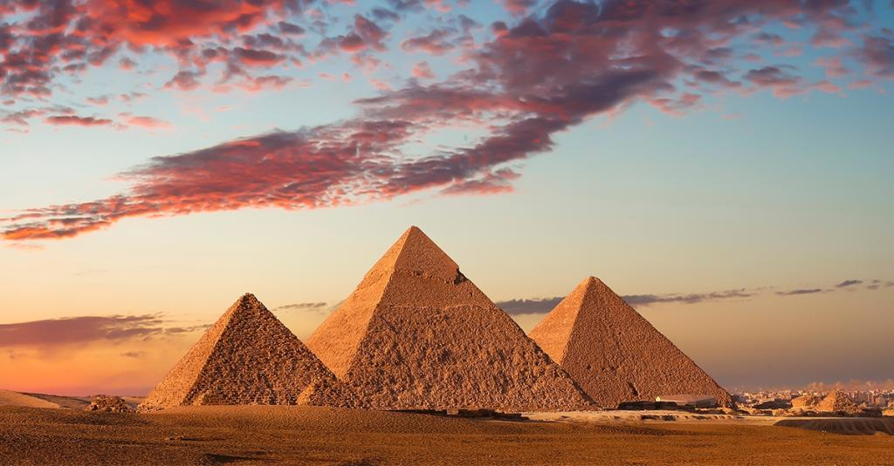
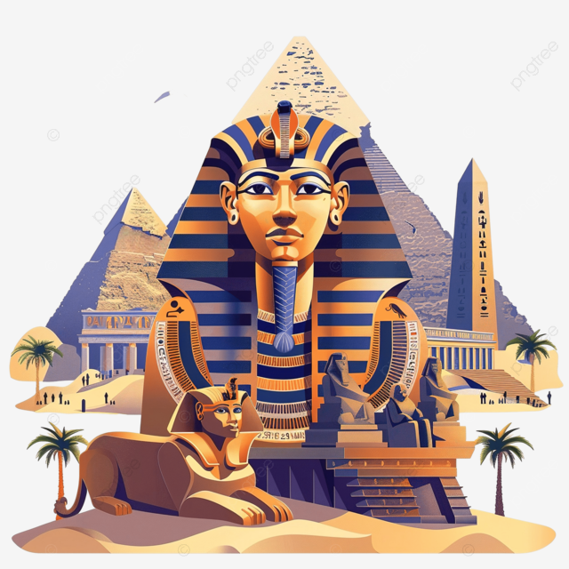
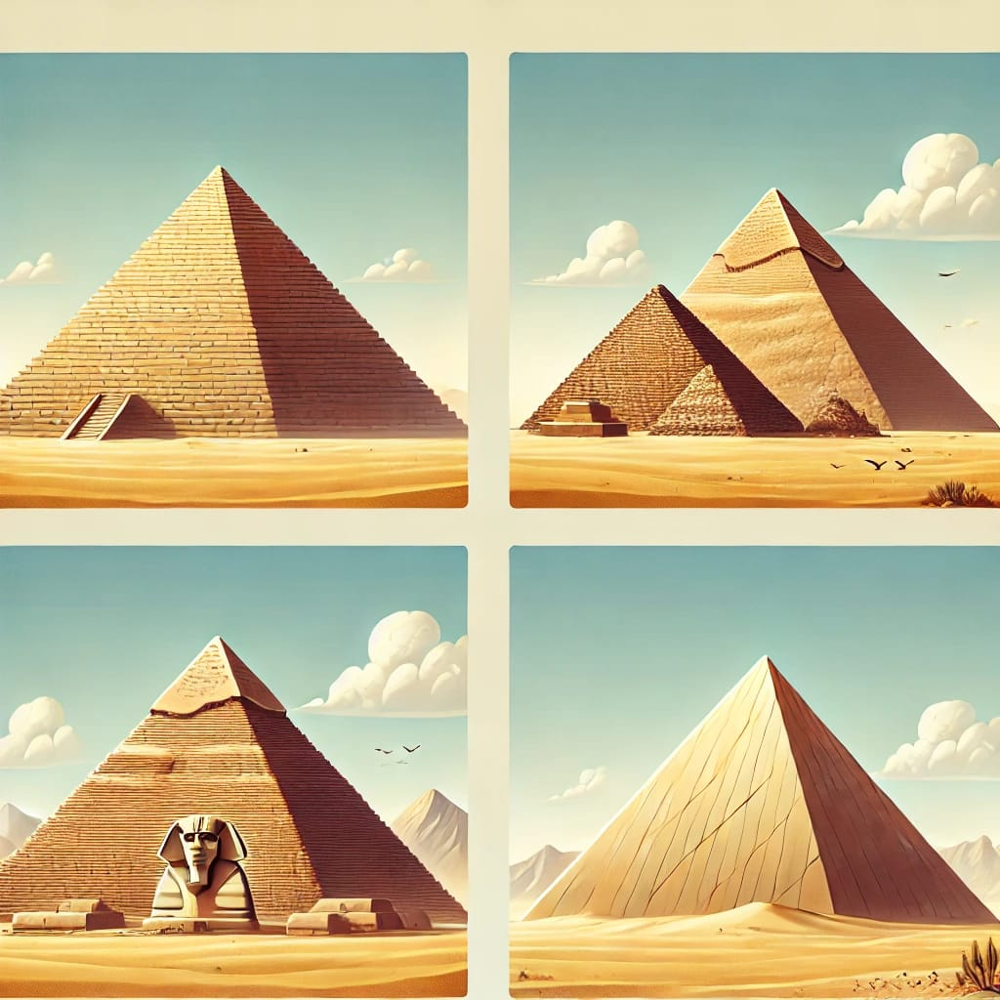

Les pyramides d’Égypte, notamment celles de Gizeh, sont des symboles majeurs de l’ingéniosité et des croyances des anciens Égyptiens. Elles ont été construites entre environ 2650 av. J.-C. et 1800 av. J.-C. et ont évolué à partir des mastabas, des tombes rectangulaires. La première pyramide, la pyramide à degrés de Djéser, a été conçue par l'architecte Imhotep vers 2650 av. J.-C. sous le règne du pharaon Djéser, marquant ainsi un tournant dans l'architecture funéraire. Les grandes pyramides de Gizeh, construites au cours de la IVe dynastie, sont les plus célèbres. La pyramide de Khéops, la plus grande des trois, atteignait initialement 146 mètres de hauteur. Ces pyramides étaient des lieux de sépulture pour les pharaons, et leur construction visait à garantir leur ascension vers les dieux et leur vie éternelle. Elles reflètent la capacité technique et organisationnelle des Égyptiens, qui ont utilisé des milliers de travailleurs pour les ériger avec une précision impressionnante. Les pyramides étaient des lieux sacrés, dédiés au culte solaire et symbolisant les rayons du soleil qui relient le pharaon au dieu Rê. Au fil du temps, la construction des pyramides a diminué, et des tombes plus petites ont été utilisées durant les périodes suivantes. Cependant, les pyramides restent aujourd’hui l'un des plus grands témoignages de la civilisation égyptienne antique et continuent de fasciner le monde entier.
Touchez la photo pour voir la video
BIENVENUE AUX PYRAMIDE D'EGYPTE
HISTORIQUE

TYPES DE PYRAMIDES
Les pyramides égyptiennes se déclinent en plusieurs types selon leur forme et leur période de construction. Les pyramides à degrés, comme celle de Djéser à Saqqarah, sont les premières structures pyramidales. Ensuite, les pyramides lisses, comme celle de Khéops à Gizeh, marquent l’apogée de l’architecture pyramidale avec des faces lisses. Certaines pyramides, comme celle de Meïdoum, présentent des faces inclinées, tandis que la pyramide rhomboïdale de Dahchour est un exemple rare de pyramide à faces concaves. Enfin, des pyramides plus petites ont été construites plus tard, destinées à des pharaons moins puissants.
